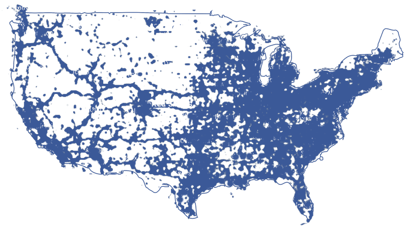

Global Internet usage is low, however mobile data use is on the rise.
In a 2G Network, downloading 25 news feed posts takes 20 seconds under ideal conditions.

2G Network Coverage
Our Solution
We have built a mock-up of the Facebook Android application that enables peer-to-peer connections.
This application allows a user to download posts from their peers in addition to Facebook servers because there exists a significant overlap between the news feeds of people living in emerging markets.